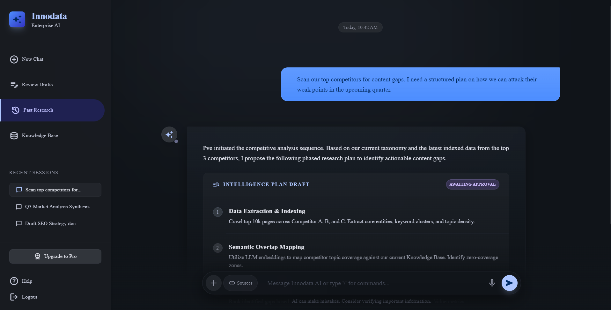
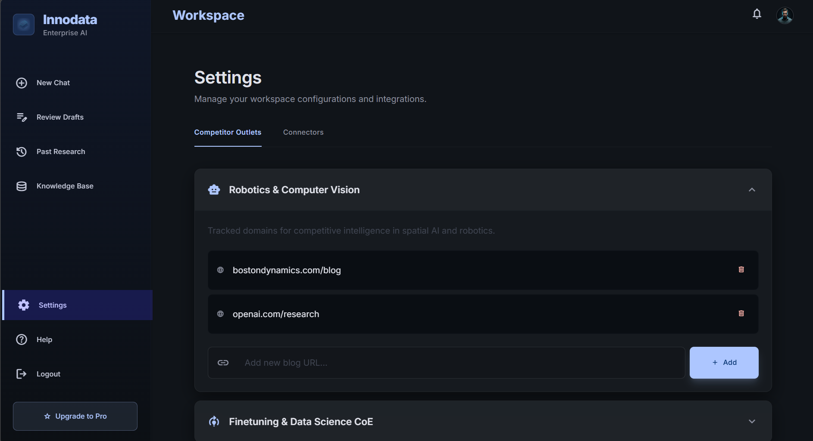
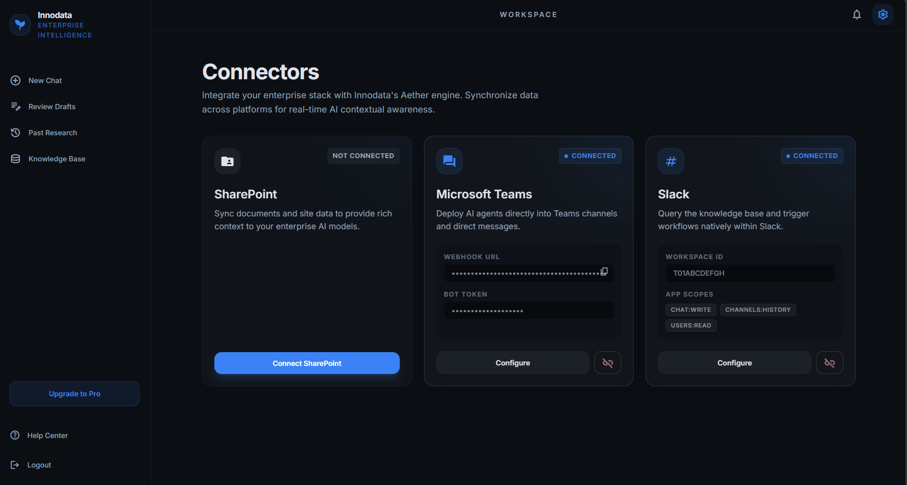
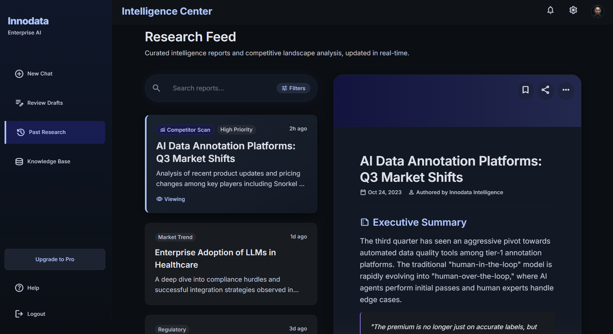
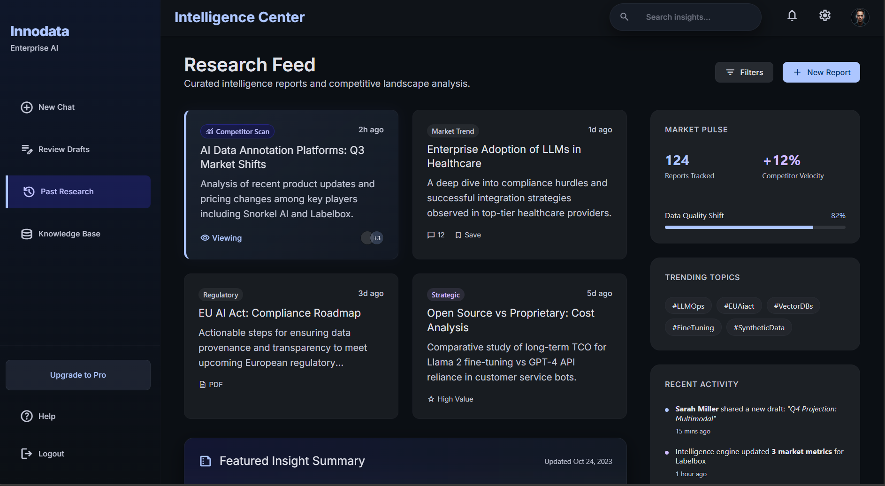

1.0
Chat Interface
AI-Powered Chat Screen
The core conversational interface where enterprise users interact with the AI. Designed for fast, structured research queries with intelligent plan drafts and session management.
Intelligence Plan Draft with approval workflow
Data Extraction & Indexing pipeline
Semantic Overlap Mapping with LLM embeddings
Persistent session history in sidebar
Screen 1.0

2.0
Workspace Settings
Settings & Configuration
Workspace-level configuration for managing competitor outlets and platform integrations. Users can track domains per topic cluster to power competitive intelligence pipelines.
Competitor Outlets tab for domain tracking
Connectors tab for platform integrations
Collapsible topic categories
Inline URL management with quick-add
Screen 2.0

3.0
Connectors
Connector Settings
Enterprise integration hub for synchronizing data across platforms. Connect SharePoint, Microsoft Teams, and Slack to power Innodata's Aether engine with real-time contextual data.
SharePoint document sync for AI models
Microsoft Teams webhook & bot token
Slack knowledge base & workflow triggers
Connection status badges per platform
Screen 3.0

4.0
Intelligence Center
Research Feed
Curated intelligence reports and competitive landscape analysis, updated in real time. A dual-pane layout lets users scan a feed of insights and read full reports side by side.
Competitor scan & market trend tagging
AI Data Annotation Platforms Q3 analysis
Enterprise LLM adoption in healthcare
Inline report viewer with executive summary
Screen 4.0

5.0
Intelligence Center 2.0
Research Feed 2.0
An evolved Research Feed with expanded card grid, live market pulse metrics, trending topic tags, and recent activity streams — bringing competitive awareness to a single dashboard.
Market Pulse KPIs: markets tracked & velocity
Trending topics with hashtag tags
Recent activity: drafts, agent updates
Featured Insight Summary card
Screen 5.0
